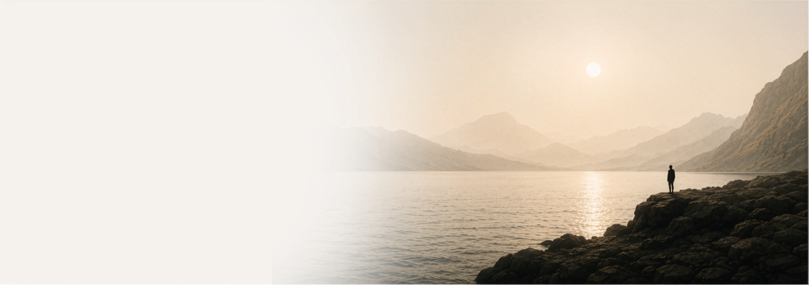
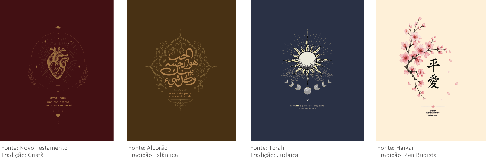
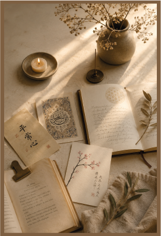
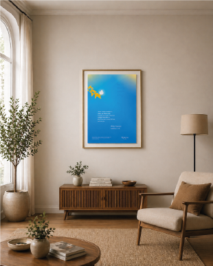
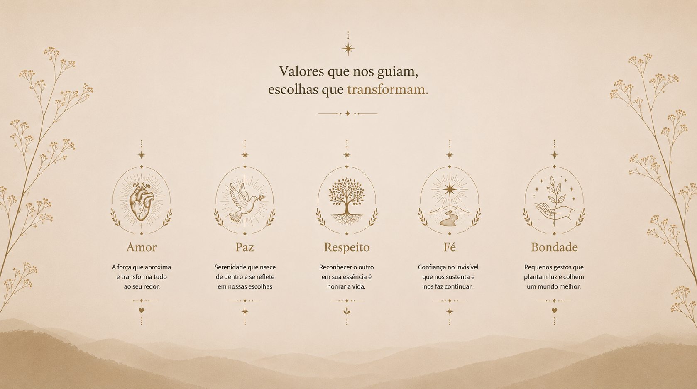
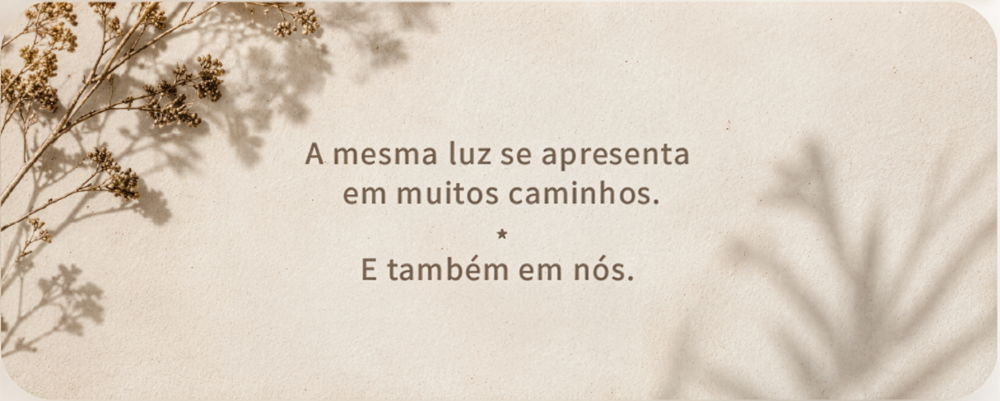

arte · espiritualidade · cultura e poesia visual
Há mais em
comum do que
pensamos
Ao longo do caminho, o sopro Divino atravessou o tempo. Inspirou consciências. Manifestou-se na palavra, no silêncio e no coração.
artes
Expressões do Sagrado
A eternidade em palavras, formas e símbolos


O que nos une,
permanece.

Ensinamentos
profundos
Religiões.
Filosofias.
Tradições.
Ao longo dos séculos, diferentes povos buscam compreender o mistério da existência e unir os homens ao seu criador.
Religare homenageia essa busca por meio da arte, reunindo símbolos, ensinamentos e inspirações que atravessam o tempo, presentes em seus escritos milenares.
Não para apontar diferenças.
Mas para respeitar o que existe em comum.

Muitas raízes,
uma mesma busca
Cada peça nasce de um mergulho em símbolos, ensinamentos e tradições que acompanham a humanidade há séculos.
Um trabalho de pesquisa, contemplação e design que procura revelar aquilo que permanece quando as formas mudam.


